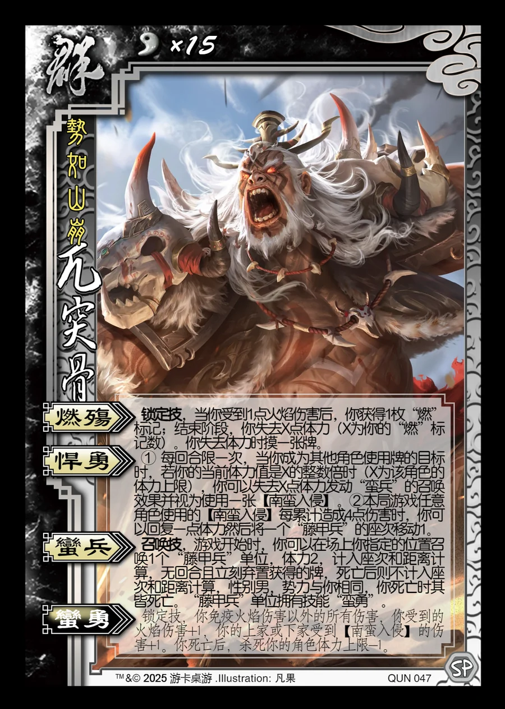

点击卡面查看大图
群
军兀突骨
♥15势如山崩
燃殇锁定技
锁定技，当你受到1点火焰伤害后，你获得1枚“燃”标记；结束阶段，你失去X点体力（X为你的“燃”标记数）。你失去体力时摸一张牌。
悍勇
① 每回合限一次，当你成为其他角色使用牌的目标时，若你的当前体力值是X的整数倍时（X为该角色的体力上限），你可以失去X点体力发动“蛮兵”的召唤效果并视为使用一张【南蛮入侵】。②本局游戏任意角色使用的【南蛮入侵】每累计造成4点伤害时，你可以回复一点体力然后将一个“藤甲兵”的座次移动1。
蛮兵召唤技
召唤技，游戏开始时，你可以在场上你指定的位置召唤1个“藤甲兵”单位，体力2，计入座次和距离计算，无回合且立刻弃置获得的牌，死亡后则不计入座次和距离计算，性别男，势力与你相同，你死亡时其皆死亡。“藤甲兵”单位拥有技能“蛮勇”。
蛮勇衍生
锁定技，你免疫火焰伤害以外的所有伤害，你受到的火焰伤害+1，你的上家或下家受到【南蛮入侵】的伤害+1。你死亡后，杀死你的角色体力上限-1。